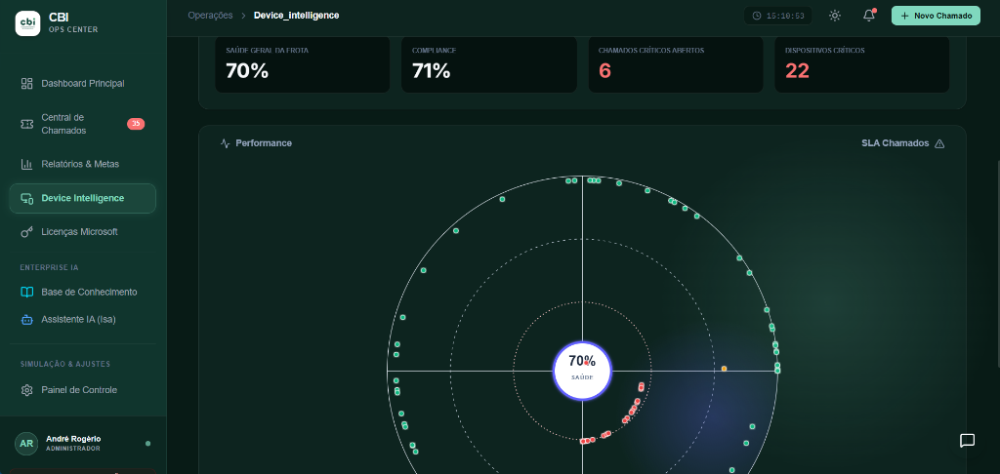
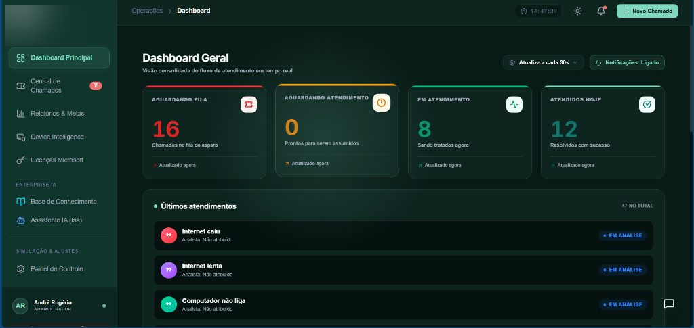
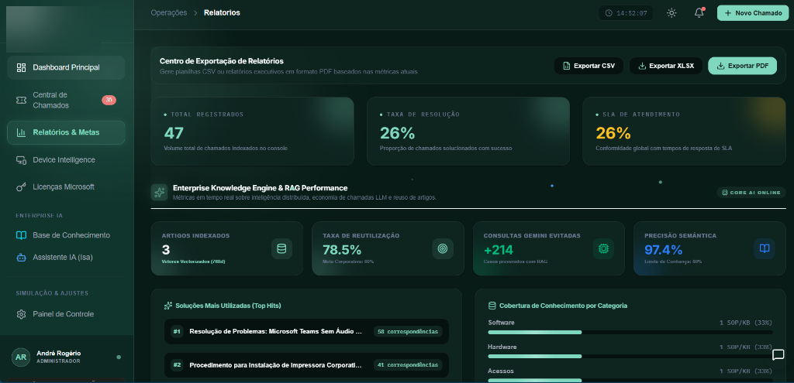
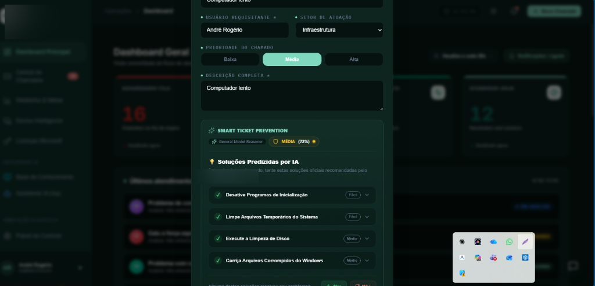
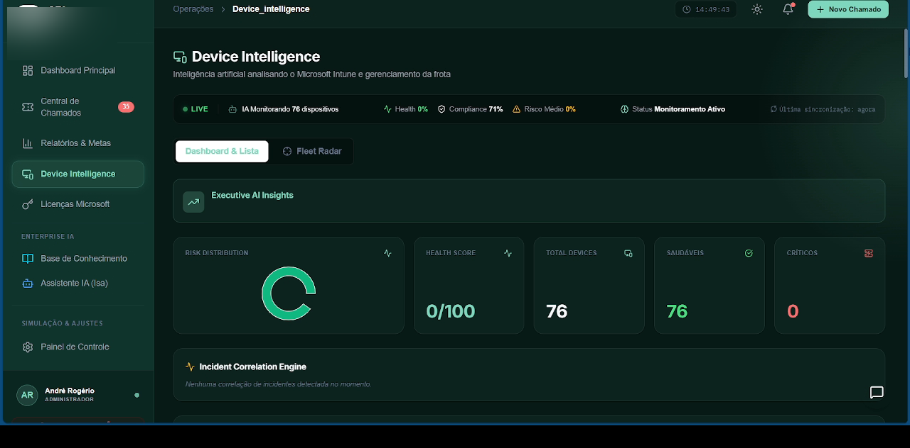
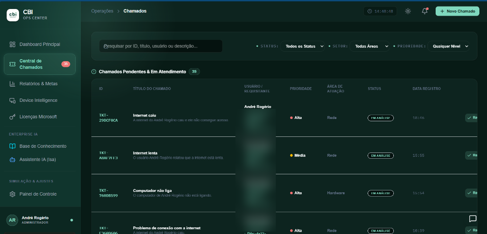
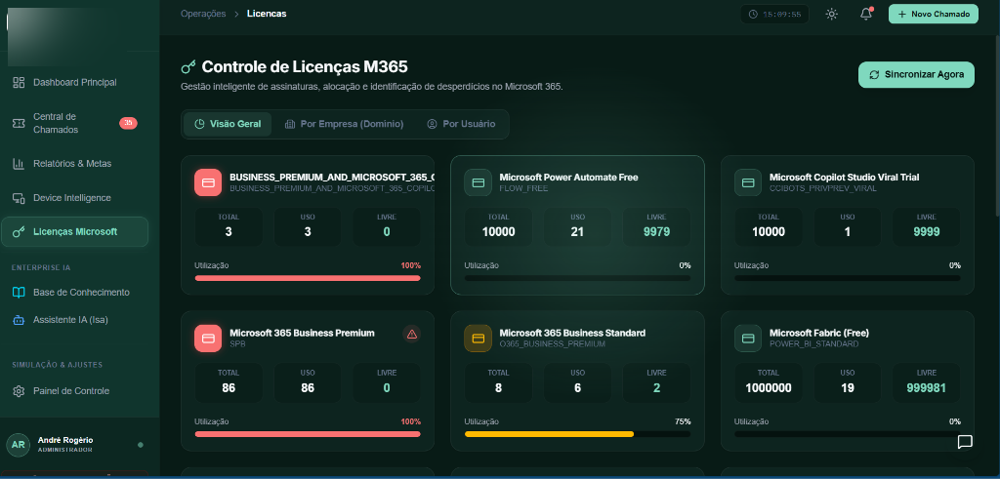
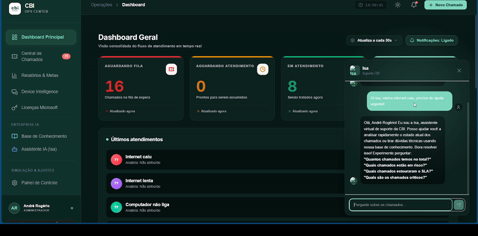

ANDRÉ
ROGÉRIO
Software Engineer | Solutions Architecture, Applied AI & Research
I build and research systems at the intersection of AI, software engineering, and real-world operations. I turn probabilistic models into reliable systems.

I'm a Software Engineer working across solutions architecture, applied AI, enterprise systems, and research. My path into technology started early, experimenting with PHP and running a homemade Habbo Hotel private server as a kid. Since then, I've moved through corporate IT, infrastructure, enterprise applications, industrial technology, applied AI, and research.
What drives me is the intersection between real problems and reliable systems. I like understanding how things actually work, designing the architecture, building the system, and making sure it survives contact with reality.
Alongside my work in engineering, I also volunteered as an English teacher. That experience shaped how I approach technology: I genuinely enjoy communicating with people, explaining complex ideas clearly, and helping others solve problems.
RESEARCH
Memory Lens is a cognitive computing platform I conceived and developed, combining semantic search, vector embeddings, knowledge graphs, episodic memory clustering, forgetting mechanisms inspired by Ebbinghaus' curve, behavioral analysis, and a 3D spatial interface built with React Three Fiber and custom WebGL shaders.
The project evolved into formal academic research on semantic document organization and spatial interfaces, under the guidance of Prof. Dr. Fabrício Tonetto Londero at UniFacens. The research is targeting submission to the International Conference on Artificial Intelligence, Computer, Data Sciences and Applications (ACDSA) in Rio de Janeiro.
BEYOND TECHNOLOGY
I tend to move quickly between very different interests. I enjoy São Paulo's nightlife and electronic music, but I also have a quieter side: I'm part of a book club in Sorocaba and recently started playing tabletop RPGs.
I'm also currently going through the process of obtaining Spanish citizenship through my grandmother, who was born in Spain. One of my personal goals is to visit Calera de León, where she was born, and explore that part of my family history firsthand.
From exploring the city at night to discussing a book, building a fictional world around a table, or tracing my family roots across generations, I enjoy discovering completely different environments, ideas and people.
2026 DUNDIE AWARD NOMINEE
"Most Likely to Automate His Own Job with AI" · Scranton Corporate IT Division
SELECTED PROJECTS
Things that started as a quick idea and became significantly more complicated.
ONBOARDING OS
A multi-tenant SaaS platform for onboarding automation connecting HR, IT, and managers. Features PostgreSQL Row-Level Security for tenant isolation, AES-256-GCM document encryption, automated LGPD data lifecycle (daily anonymization worker), validated state machine transitions, and real-time operational visibility.
INTERNAL TICKETING SYSTEM








An AI-powered ITSM platform with intelligent ticket deflection, structured intake, and deterministic AI validation. Uses a confined AI pattern: probabilistic model → structured output (typed JSON schema) → deterministic validation → fallback rules → application action. Integrates Microsoft Graph API for Intune device compliance telemetry.
Initial deployment: 22 users
MEMORY LENS
A cognitive computing platform combining semantic search with vector embeddings, knowledge graphs, episodic memory clustering, forgetting mechanisms (Ebbinghaus curve), behavioral analysis via Identity Engine, and a 3D spatial interface with custom WebGL shaders. Features 16 API routes, IDOR security tests, and a Chief Organism rendered with React Three Fiber.
Academic research under Prof. Dr. Fabrício Londero (UniFacens)
FUNDIVR
A web-based VR simulator for training aluminum furnace operators. Features a full operational training workflow (PPE check, charge inspection, thermal control, skimming, emergency shutdown), real-time telemetry via WebSocket, automated performance scoring with weighted evaluation, and a resilient demo mode for presentations without database dependencies.
Digital Twin & 5G Residency (TIC 51)

TECHNICAL CAPABILITIES
ENGINEERING APPROACH
Camera crew leaves. Engineering remains.
I design and build systems that combine AI with deterministic logic, security, and real operational constraints.
Architecture and APIs
I structure applications around clear service boundaries, validated state transitions, and type-safe contracts. My backend stack includes Node.js, Express, Fastify, Next.js API routes, PostgreSQL, and Supabase.
Data and Security
I use versioned database migrations, PostgreSQL Row Level Security with session-scoped tenant isolation, AES-256-GCM encryption for sensitive documents, automated LGPD compliance workers, secure session handling, and structured request validation with Zod.
Integrations and AI
I build AI systems using a confined pattern: probabilistic model → structured output → deterministic validation → fallback rules → application action. The AI suggests, but never acts unsupervised. I also build webhook-driven integrations for enterprise systems (SAP, Microsoft Graph, ERP).